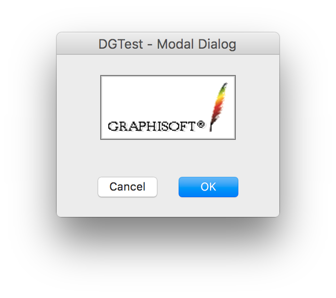
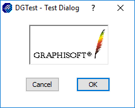

Modal dialogs
A modal dialog is a temporary window an application creates to retrieve user input. A modal dialog contains dialog items with which the user can enter text, choose options, or direct actions. A modal dialog requires the user to supply information or cancel the dialog before allowing the application to continue. A modal dialog is created, perform its task, and is destroyed by calling a single function.
When a modal dialog is created, it becomes the topmost, active window. While the modal dialog is opened, other windows or dialogs of the application can not be activated. The modal dialog remains active until it is closed or the user activates a window or dialog in another application.
There are two methods of creating modal dialogs. To create a modal dialog, which is defined in resource script, the application must supply a GDLG resource in a GRC file to describe the dimensions, style and content of the dialog. The application must also supply a dialog callback function to carry out the dialog related tasks. The application can create the dialog by using the DGModalDialog function. The function loads the GDLG resource of the dialog and creates the dialog window and the dialog items that matches the resource specifications. The application can use the DGBlankModalDialog function also. This function does not use resource. It creates a blank modal dialog from program code. The application can append dialog items on dialogs with the DGAppendDialogItem function independently of the creation method. Then DGModalDialog or DGBlankModalDialog processes every modal dialog events and calls the dialog callback function with DG messages to handle the user actions. Finally it destroys the dialog and returns a value that refers to the way the dialog was closed.
Modal dialogs can provide context-sensitive help for their dialog items. A dialog item can have two types of help information: a tooltip and an anchor to a separate detailed information. On Macintosh, the short one is displayed in a balloon help if this feature is enabled through the Macintosh system Help menu. On Windows, the usual tooltips serve to show the short item help. Tooltips are displayed only if they are enabled. When DG is initialized, tooltips are automatically enabled. Use DGDisableToolTips to disable displaying tooltips and DGEnableToolTips to enable them again. The detailed version of the item help can be invoked by setting the keyboard focus to a focusable dialog item then pressing the [F1] key on Windows or [Help] key on Macintosh; or by clicking the right mouse button on the item; or by clicking the help [?] button in the dialog caption then clicking on the item itself.
The tooltips and the help anchor strings are defined in DLGH resources. The resource ID of the DLGH resource should be the same as the resource ID of the dialog's GDLG resource. On Windows, if a modal dialog has a DLGH resource, a small [?] button appears in the dialog caption indicating that context-sensitive help is available for its items.
Modal dialogs have a so called default button which appears with a bold outline. The default button always should be the first dialog item in the dialog's item list (its item ID is DG_OK). Most modal dialogs also have a Cancel button which should be the second in the item list (its item ID is DG_CANCEL). Except for some special cases, pressing the ENTER or the ESC key has the same effect as clicking the default or the cancel button, respectively. For details see the dialog keyboard interface page.
Modal dialogs always have a thick top caption with the title of the dialog. On Windows, the caption also contains a system menu with the application's icon on the left side; a close box and optionally a help button on the right side. Clicking the close box has the same effect as clicking the Cancel button (or the OK, if there is no Cancel button in the dialog). If the dialog is growable, a small size box appears in the lower right corner of the dialog on Macintosh. On Windows, a thick frame indicates that the user can resize the dialog.
-
 
Dialog GRC Specification
'GDLG' resID Modal [| frameFlag | growFlag | captionFlag] x y dx dy "dlgTitle" {
dialogItem1
...
dialogItemi
...
dialogItemn
}
where resID is the resource ID of the modal dialog. The Modal keyword can be combined with the optional frameFlag, growFlag and captionFlag using the OR (|) operator. If the frameFlag is omitted, the dialog has a normal frame. If growFlag is omitted, the dialog is not growable. If the captionFlag is not specified, the dialog has a top caption by default. x and y are the pixel coordinates of the upper left corner of the dialog, dx and dy are the width and height of the dialog in pixels. dlgTitle defines the title of the dialog. dialogItemi (1 <= i <= n) specify n pieces of dialog items. For the GRC specifications of the various dialog items see the DG dialog items page.
Possible values of the frameFlag:
-
Value Meaning normalFrame The dialog has normal dialog frame. thickFrame The dialog has thick frame. noFrame The dialog has no frame.
Possible values of the growFlag:
-
Value Meaning noGrow The dialog cannot be sized. hGrow The dialog can be sized horizontally. vGrow The dialog can be sized vertically. grow The dialog can be sized in both directions.
Possible values of the captionFlag:
-
Value Meaning noCaption The dialog has no caption.
Help GRC Specification
GRC Specification of the Dialog Helps.
Remarks
The dimensions, title and content of modal dialogs can be specified not only in GDLG resources; this can be done in runtime, too. If you call the DGModalDialog function with zero resId parameter, DG creates an empty, non-growable dialog. When handling the DG_MSG_INIT message in the dialog callback function, you can size the dialog to the desired dimensions, can set its title and other properties by calling dialog related functions. Then the dialog can be filled with items by using the DGAppendDialogItem function.
The pointer to the dialog callback function should be passed in the dCallBack parameter of the DGModalDialog function. For the simplest modal dialogs that have only buttons and static items (static text, picture, icon, etc.) there is no need to implement a callback function. In this case DGModalDialog returns only if a button is clicked.
After a modal dialog is created by DGModalDialog, DG starts its own message loop, taking temporary control of the message queue for the entire application. DG converts the system-specific messages into DG messages and sends them to the dialog callback function. While a modal dialog is opened, other dialogs can receive DG_MSG_UPDATE messages only.
DGModalDialog returns only if the modal dialog is closed. The user usually closes a modal dialog by clicking the OK or the Cancel button. The dialog callback function receives a DG_MSG_CLICK message with DG_OK or DG_CANCEL as the item parameter. On Windows, if the user clicks the close box in the caption the item parameter is DG_CANCEL (or DG_OK if there is no Cancel button in the dialog). The dialog is closed only if the callback function returns a non-zero value (typically DG_OK or DG_CANCEL) for the DG_MSG_CLICK message. The application can use this return value to determine whether the modal dialog completed its task successfully or was canceled by the user.
Note that a modal dialog can also be exited by calling the DGAbortModalDialog function. In this case the dialog callback function receives a DG_MSG_CLOSE message with DG_ABORT as the item parameter and DGModalDialog returns DG_ABORT.